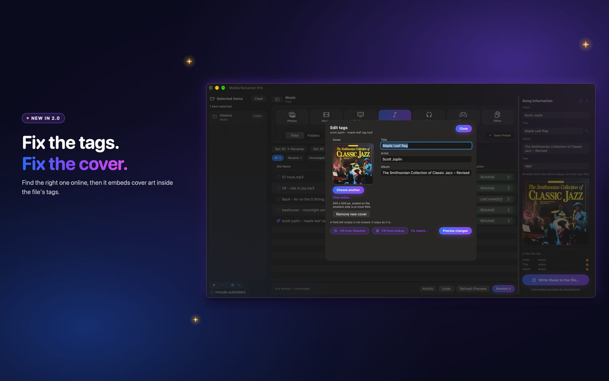

How to edit tags and cover art in Media Renamer Pro
Sometimes the file name is right and the tags inside the file are wrong. 2.0 lets you fix the tags and the cover art without leaving the app.
 By Buck Kettering· October 30, 2026· Applies to version 2.0
By Buck Kettering· October 30, 2026· Applies to version 2.0
Turn the tag editor on
Tag writing is off by default, so nothing about your files changes until you decide it should. Open Settings, then General, then the Tags section, and switch on Tag editor. The first time you do, the app explains what writing tags means.
Good to know: Changing tags changes the file itself. Apps that watch files for changes (backup, sync, download or media-manager tools) may treat it as a new or changed file. Undo puts it back exactly.
With the tag editor off, the app only renames. It never opens a file to write into it.
Open the Edit tags panel
Two ways in, and both end up in the same panel:
- Right-click a file in the list on the left (long-press on iPhone and iPad) and choose Edit tags.
- Click the small tag icon on a row, left of the old name. The information panel opens down the right side. Choose Edit tags there.
Clicking the row itself does nothing. The panel only opens when you ask for it.

What you can change
The fields depend on the kind of file:
| Type | Fields |
|---|---|
| Music | Title, artist, album, year, cover art |
| Movies | Title, year, cover art |
| TV shows | Show, season, episode, episode title, year, cover art |
A field you leave empty is not erased. It stays as it is. For audiobooks, the quickest way to put the author and book into the tags is Fill tags from filename. To remove tags on purpose, use Clean tags.
Preview, write and undo
Nothing is saved when you type. Press Preview changes and the panel shows the before and after for each field. If a file cannot be written, it tells you why in plain words and leaves the file alone.
When the preview looks right, press Write tags. The app then reads the tags back to check them. Undo restores the file exactly as it was, byte for byte, not just the tag text.
Which files it works on
- MP3: the ID3 tag, including a front cover.
- MP4, M4V, M4A and M4B: the tag list, including the cover.
- MKV and WebM: the tags, with cover art stored as an attachment.
Other types, such as FLAC, OGG, MOV and AVI, are renamed only. Game files are not tag edited.
If a write is refused
The writer would rather refuse than risk your file. A refusal always comes with a reason, and the file is untouched. The common ones:
- The cover does not fit. The editor tries again without the cover and says so in orange, so your text changes still go through.
- The file looks damaged or unusual. For example an MKV with extra data after its main section.
- The file is very large and the tag area is full. Files over 400 MB are not rewritten to make room.
Next: find cover art online, or clean and fill many files at once.